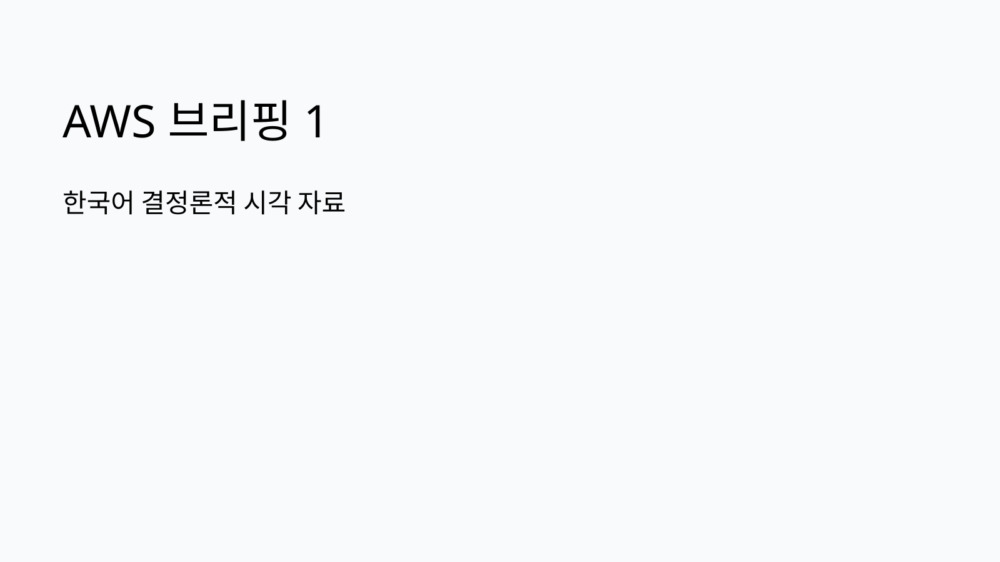
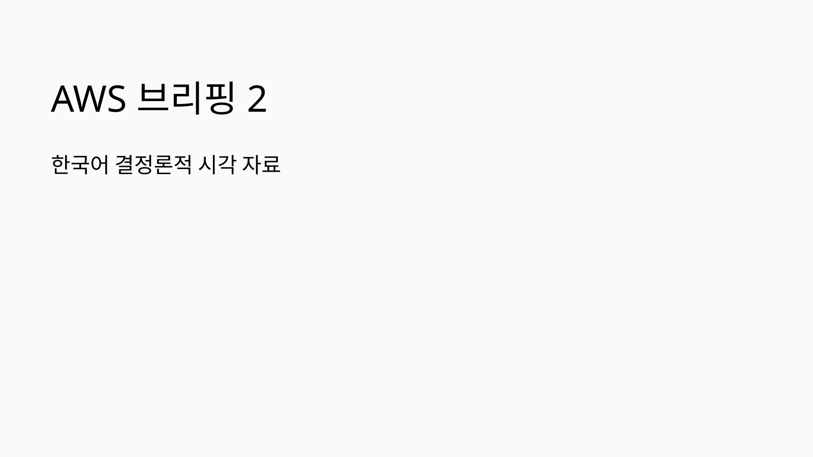
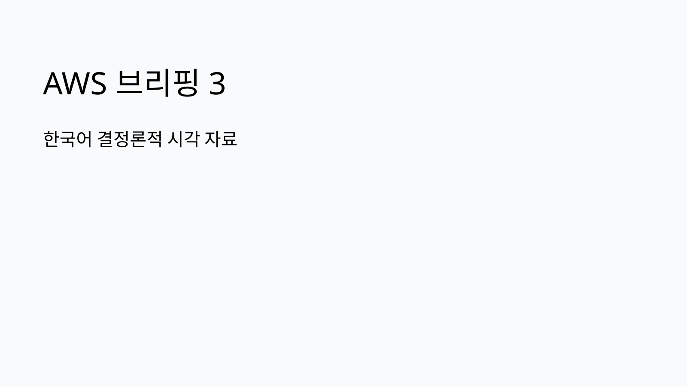

GPT-6 Astra의 Amazon Bedrock 제공과 엔터프라이즈 적용 검토
GPT-6 Astra가 Amazon Bedrock에서 제공되며 대규모 컨텍스트, 코딩·문서·분석 업무, Bedrock API 기반 호출과 감사 통제 검토 포인트가 함께 제시되었습니다.
원문 보기이번 실행에서 신규 저장·동기화된 AWS source-summary를 브리핑 입력으로 사용했습니다. 화면 표시는 한국어로 재구성했고, 제품명과 원문 URL은 공식 표기를 유지했습니다.
오늘 확인된 AWS 블로그 흐름은 AI 에이전트 평가, 모델·피처 거버넌스, 고성능 AI 인프라, 서버리스 데이터 계층 사례로 묶입니다. 기업 의사결정자는 기능 채택 여부보다 데이터 접근권한, 평가 기준, 비용 가시성, 변경 이력 추적을 함께 검토해야 합니다.
GPT-6 Astra가 Amazon Bedrock에서 제공되며 대규모 컨텍스트, 코딩·문서·분석 업무, Bedrock API 기반 호출과 감사 통제 검토 포인트가 함께 제시되었습니다.
원문 보기


| 기사 | 게시 | 카테고리 |
|---|---|---|
| 2026년 8월 AI 빌더를 위한 AWS 주요 업데이트 모음 | 2026-09-10 | AI/ML |
| Heurist Finance의 Amazon Bedrock AgentCore 기반 AI 투자 워크벤치 구축 사례 | 2026-09-10 | AI/ML |
| Ray Serve Deep Learning Containers로 TorchServe 워크로드 지원 단순화 | 2026-09-10 | AI/ML |
| Amazon Quick의 사용자 단위 맞춤 권한 자동화 | 2026-09-10 | AI/ML |
| Heurist Finance의 Amazon Bedrock AgentCore 기반 AI 투자 워크벤치 구축 사례 | 2026-09-09 | AI/ML |
AI 서비스가 단일 모델 호출을 넘어 평가 자동화, 레지스트리 연계, 피처 단위 업데이트, 인프라 벤치마크까지 확장되고 있습니다. 다만 각 항목은 공식 블로그 범위의 사례이므로 실제 도입 타당성은 보안·데이터·비용 조건으로 별도 확인이 필요합니다.
권한 분리, 로그 보존, 평가 데이터의 민감정보 처리, 모델 산출물 검증 기준, 비용 추적 단위를 사전에 정의해야 합니다. 특히 고객 접점·컨택센터·게임 서비스처럼 실시간성이 높은 영역은 장애 영향도와 롤백 기준을 문서화해야 합니다.